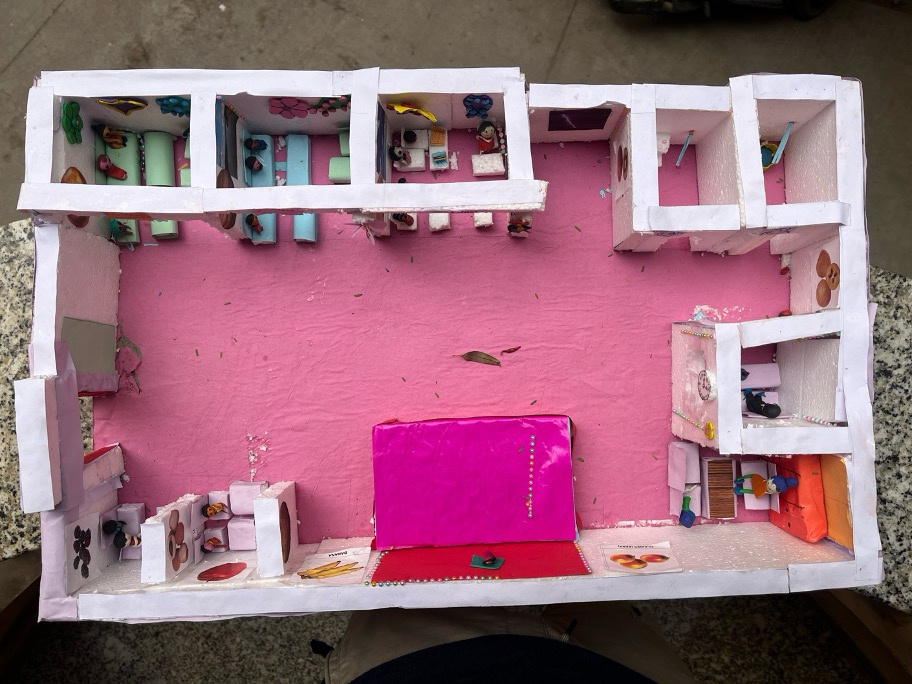
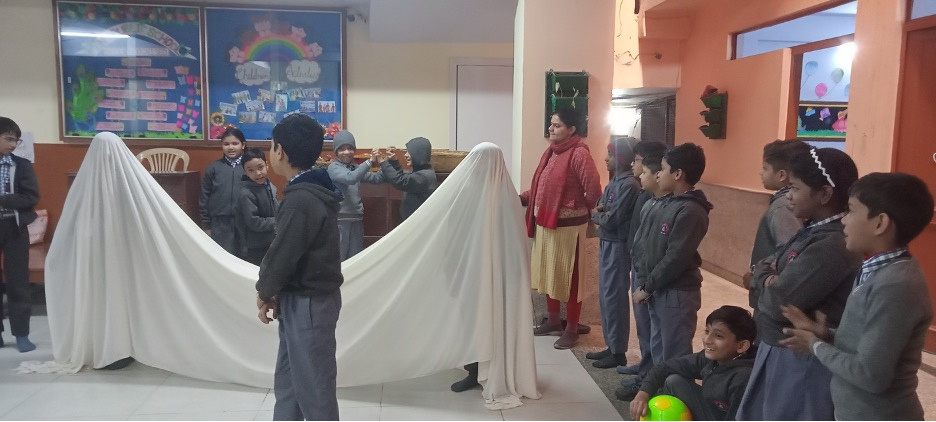

Methodology
Art-Based Learning Framework
The project used art not as a standalone subject, but as a central method for learning, reflection, and engagement. Activities such as drawing, model-making, and storytelling were woven into the educational experience, allowing students to make meaning of their surroundings and express themselves more freely and deeply.
Co-Design Workshops with Teachers

A series of collaborative workshops with teachers helped shape the project methodology. Teachers reflected on classroom challenges and collaborated with arts professionals to develop activities. These sessions emphasized supportive facilitation over instruction, and encouraged teachers to allow space for student creativity.
Drawing and Illustration
Students were invited to draw scenes from their lives—homes, dreams, school journeys—using open-ended themes. Facilitators and teachers engaged students in conversations about their illustrations, encouraging reflection, storytelling, and verbal articulation.
Model-Making
Children built 3D models using everyday materials like cardboard, clay, and recycled objects. This hands-on work helped them deepen their understanding of space, structure, and emotional connection to the places they inhabit. The models represented classrooms, homes, streets, and gathering spots.
Drama and Performance
The final phase brought together ideas from previous sessions into a collective performance. Through drama workshops, students developed a script based on shared themes and stories, rehearsed scenes, and performed at the School Mela for peers, families, and teachers.